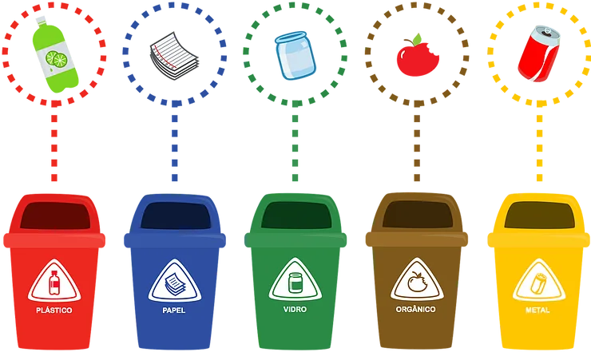

Papel
Papéis limpos, folhas, jornais, revistas e caixas de papelão podem ser reciclados.
- Remova grampos e fitas adesivas.
- Evite descartar papel engordurado ou molhado.
- Dobre caixas grandes para reduzir volume.

Papéis limpos, folhas, jornais, revistas e caixas de papelão podem ser reciclados.
Garrafas PET, embalagens, tampas e recipientes plásticos podem ser reciclados.
Latas de alumínio, aço e outros metais possuem alto potencial de reaproveitamento.
Garrafas, frascos e potes de vidro podem ser reciclados inúmeras vezes.
Restos de alimentos, cascas de frutas, legumes, verduras, borra de café e outros materiais biodegradáveis.
Residuos que não podem ser reciclados e devem ser descartados separadamente dos lixos recicláveis e orgânicos.
Equipamentos eletrônicos precisam de descarte especial devido aos componentes químicos.
Materiais contaminados ou utilizados em procedimentos médicos e veterinários exigem descarte especializado para evitar riscos biológicos e ambientais.